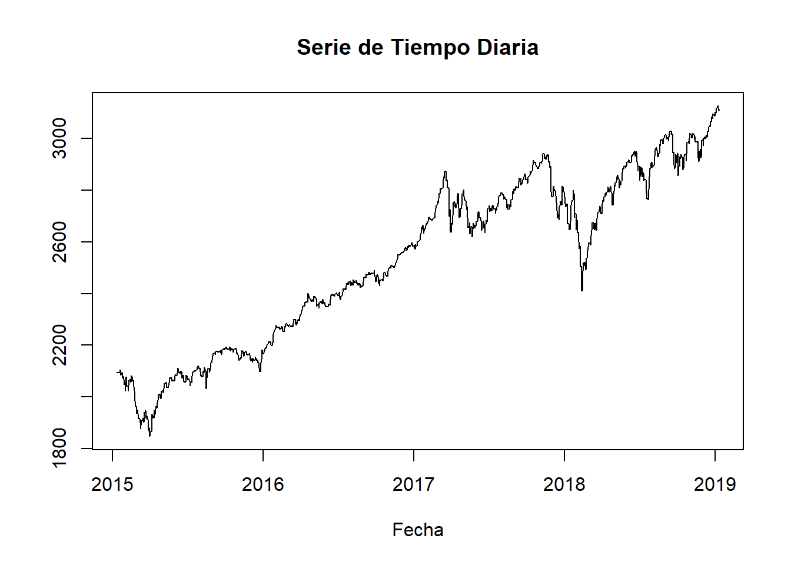
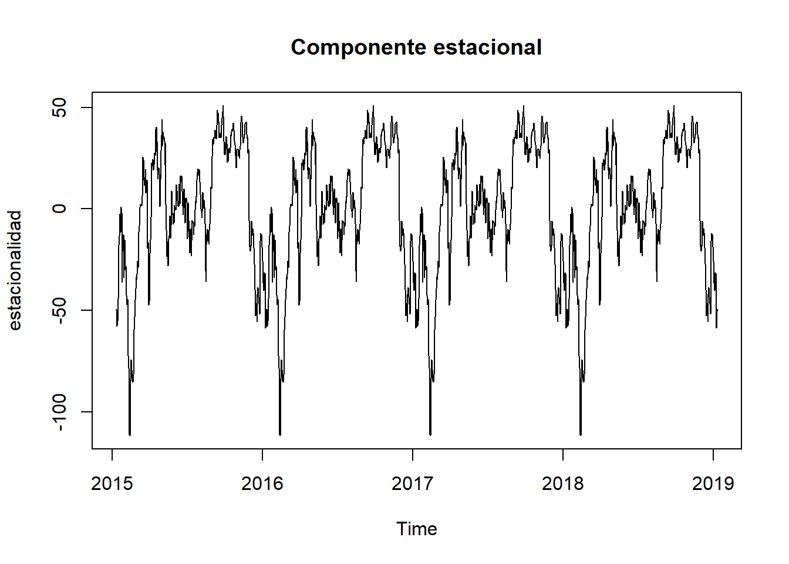
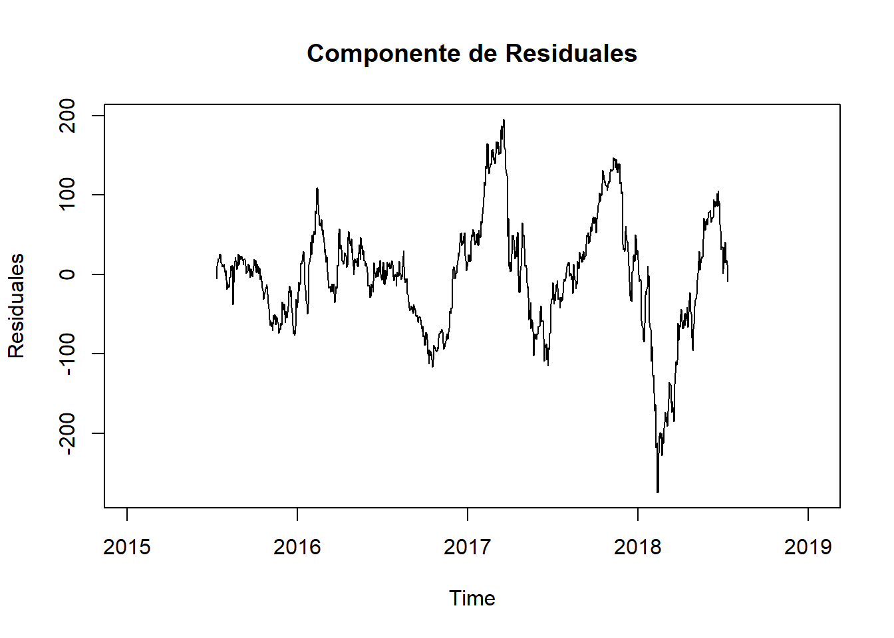
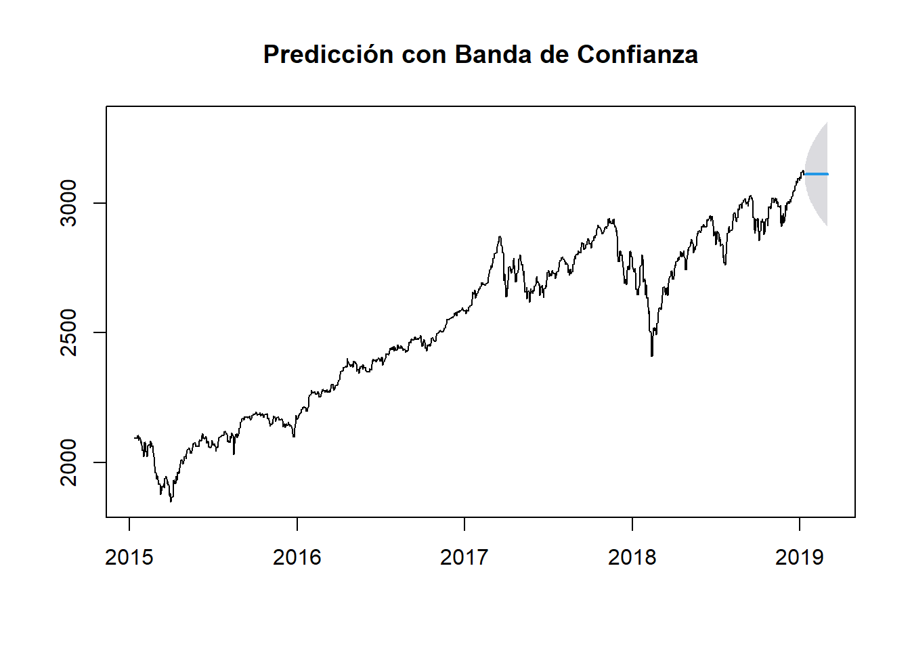
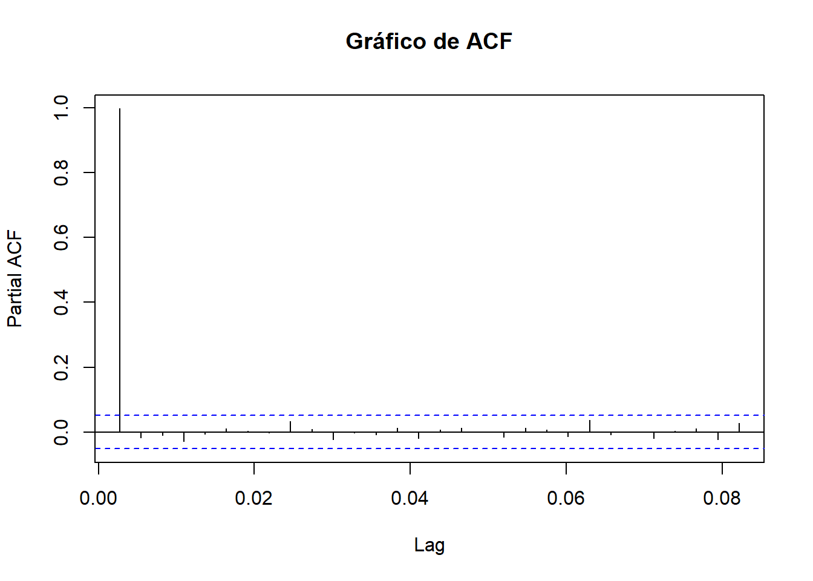

Código
# Carga de paquetes necesarios
knitr::opts_chunk$set(echo = TRUE)
knitr::opts_chunk$set(message = FALSE)
knitr::opts_chunk$set(warning = FALSE)
library(tidyverse)
library(lubridate)
library(forecast)
library(xts)Trabajo Práctico n°4
# Carga de paquetes necesarios
knitr::opts_chunk$set(echo = TRUE)
knitr::opts_chunk$set(message = FALSE)
knitr::opts_chunk$set(warning = FALSE)
library(tidyverse)
library(lubridate)
library(forecast)
library(xts)data <- read_csv('yahoo_stock.csv')
glimpse(data)Rows: 1,825
Columns: 7
$ Date <date> 2015-11-23, 2015-11-24, 2015-11-25, 2015-11-26, 2015-11-2~
$ High <dbl> 2095.61, 2094.12, 2093.00, 2093.00, 2093.29, 2093.29, 2093~
$ Low <dbl> 2081.39, 2070.29, 2086.30, 2086.30, 2084.13, 2084.13, 2084~
$ Open <dbl> 2089.41, 2084.42, 2089.30, 2089.30, 2088.82, 2088.82, 2088~
$ Close <dbl> 2086.59, 2089.14, 2088.87, 2088.87, 2090.11, 2090.11, 2090~
$ Volume <dbl> 3587980000, 3884930000, 2852940000, 2852940000, 1466840000~
$ `Adj Close` <dbl> 2086.59, 2089.14, 2088.87, 2088.87, 2090.11, 2090.11, 2090~serie_tiempo<- ts(data$High,
start = c(2015, 11, 23),
end= c(2019, 11, 01),
frequency= 365)
# Graficar la serie de tiempo
plot(serie_tiempo, main = "Serie de Tiempo Diaria", xlab = "Fecha", ylab = "")
# Resample the data to a weekly frequency
weekly_data <- period.apply(data, endpoints(data, "weeks"), mean)descomposicion <- decompose(serie_tiempo)
# Componente de tendencia
plot(descomposicion$trend, main = "Componente de Tendencia", ylab = "Tendencia")
plot(descomposicion$seasonal, main = "Componente estacional", ylab = "estacionalidad")
plot(descomposicion$random, main = "Componente de Residuales", ylab = "Residuales")
Autocorrelation Function (ACF) = autocorrelación entre la serie de tiempo y una retrasada de si misma —> Moving Average Model (MA)
Proceso de promedio móvil (MA), un proceso en el que el valor actual de la serie se define como una combinación lineal de errores pasados. Suponemos que los errores se distribuyen independientemente con la distribución normal.
ACF define el orden MA(q)
Partial Autocorrelation Function = La autocorrelación parcial mide la correlación entre dos variables separadas por k periodos cuando no seconsidera la dependencia creada por los retardos intermedios existentes entre ambas.
Proceso autorregresivo (AR) , se dice que una serie de tiempo es AR cuando el valor presente de la serie de tiempo se puede obtener utilizando valores anteriores de la misma serie de tiempo, es decir, el valor presente es el promedio ponderado de sus valores pasados.
PACF define AR (p)
acf(serie_tiempo, lag.max = 200, plot=T)
pacf(serie_tiempo, main = "Gráfico de ACF", lag.max = 30)
\[\begin{align*} \LARGE \mathbf{ARIMA} (p, d, q) {x} (P, D, Q)S \end{align*}\]
Elementos de la tendencia:
Elementos de la estacionalidad:
# Ajustar un modelo ARIMA automáticamente
modelo_autoarima <- auto.arima(serie_tiempo,
seasonal= TRUE)
# Resumen del modelo ARIMA seleccionado automáticamente
summary(modelo_autoarima)Series: serie_tiempo
ARIMA(0,1,1) with drift
Coefficients:
ma1 drift
0.0481 0.6968
s.e. 0.0263 0.3811
sigma^2 = 193.3: log likelihood = -5913.47
AIC=11832.95 AICc=11832.96 BIC=11848.81
Training set error measures:
ME RMSE MAE MPE MAPE MASE
Training set 0.001512134 13.88835 8.256313 -0.002207855 0.3257584 0.02986784
ACF1
Training set -0.0002433824# Número de pasos hacia el futuro para hacer la predicción
n_pasos <- 70 # Reemplaza con el número de pasos que desees predecir
# Ajustar un modelo ARIMA con los parámetros especificados
modelo_arima <- arima(serie_tiempo,
order = c(0, 1, 1),
seasonal = c(0,1,0))
# Hacer la predicción
prediccion <- forecast(modelo_arima, h = n_pasos, level = 0.95)
# Imprimir la predicción con la banda de confianza
# Crear un gráfico de las predicciones con banda de confianza
plot(prediccion, main = "Predicción con Banda de Confianza")